2D Robot Localization - Tutorial
This tutorial introduces the main aspects of UKF-M.
Goals of this script:
- understand the main principles of Unscented Kalman Filtering on Manifolds (UKF-M) which are described in [BBB19].
- get familiar with the implementation.
- design an UKF for a vanilla 2D robot localization problem.
We assume the reader to have sufficient prior knowledge with (unscented) Kalman filtering. However, we require really approximate prior knowledge and intuition about manifolds and tangent spaces.
This tutorial describes all one require to design an Unscented Kalman Filter (UKF) on a (parallelizable) manifold, and puts in evidence the versatility and simplicity of the method in term of implementation. Indeed, we only need to define an UKF on parallelizable manifolds:
- a (physical) model of the state-space system that specifies the propagation and measurement functions of the system.
- an uncertainty representation of the estimated state of the system, which is a mapping that generalizes the linear error definition
 to any type non-linear uncertainty representation.
to any type non-linear uncertainty representation.
- standard UKF parameters that are noise covariance matrices and sigma point parameters.
We introduce the UKF methodology by addressing the vanilla problem of robot localization, where the robot obtains velocity measurements, e.g., from wheel odometry, and position measurements, e.g., from GPS. The robot state consists of the robot orientation along with the 2D robot position. We reproduce the example that is described in [BB17], Section IV.
Contents
Initialization
Start by cleaning the workspace. Be also sure that all paths have been added, otherwise launch importukf.m.
clear all; close all;
The Model
The first ingredient we need is a (physically based) model that defines:
- the state of the system at instant 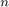, namely
 , where 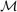 is a parallelizable manifold (vectors spaces, Lie groups and others). Here the state corresponds to the robot orientation and the 2D robot position.
, where 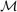 is a parallelizable manifold (vectors spaces, Lie groups and others). Here the state corresponds to the robot orientation and the 2D robot position.
- a propagation function that describes how the state of the system evolves along time.
% sequence time (s) T = 40; % odometry frequency (Hz) odo_freq = 100; % odometry noise standard deviation odo_noise_std = [0.01; % longitudinal speed (v/m) 0.01; % transversal shift speed (v/m) 1/180*pi]; % differential odometry (rad/s) % GPS frequency (Hz) gps_freq = 1; % GPS noise standard deviation (m) gps_noise_std = 1; % radius of the circle trajectory (m) radius = 5; % total number of timestamps N = T*odo_freq; % integration step (s) dt = 1/odo_freq;
The parameters have different odometry and GPS frequencies. Now, we compute the true state of robot during the sequence along with noisy inputs.
[states, omegas] = localization_simu_f(T, odo_freq, odo_noise_std, ...
radius);
The state and input are both array of structure. One can access to there values to a specific instant n as:
state = states(n) omega = omegas(n)
We can then access to the elements of the state or the input as:
states(n).Rot % 2d orientation encoded in a rotation matrix states(n).p % 2d position omegas(n).v % robot forward velocity omegas(n).gyro % robot angular velocity
The elements of the state and the input depend on the considered problem, where we encode the orientation in a rotation matrix. In all our examples, we define 2D and 3D orientations in matrices living respectively in  and 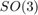.
and 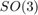.
You can also directly look at the localization folder to see the model.
With the true state trajectory, we simulate noisy measurements of the robot position, where the odometry and GPS have different frequencies.
[ys, one_hot_ys] = localization_simu_h(states, T, odo_freq, ...
gps_freq, gps_noise_std);
ys is here a matrix that contains all the observations. To get the k-th measurement, simply take the k-th column as
y = ys(:, k)
The odometry and GPS have different frequencies. We thus need a variable 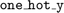 that containts 1 at instant where the k-th measurement happens and 0 otherwise (we have a kind of multi-rate Kalman filter).
Filter Design and Initialization
Designing an UKF on parallelizable manifolds consists in:
- defining a model of the propagation function and the measurement function.
- choosing the retraction
 and inverse retraction
and inverse retraction  (we discuss about this below) such that
(we discuss about this below) such that  , 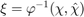, where
, 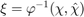, where  is the true state, 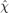 the estimated state, and 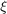 the state uncertainty (we does not use notation 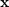 and 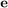 to emphasize the differences with the linear case).
is the true state, 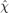 the estimated state, and 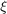 the state uncertainty (we does not use notation 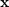 and 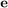 to emphasize the differences with the linear case). - setting UKF parameters such as sigma point dispersion and noise covariance values.
Step 1) is already done, as we just have to take the functions defined in the model.
Step 2) consists in choosing the functions that encodes our representation of the state uncertainty. A basic UKF is building on the error defined as , which is clearly not optimal for dealing, among other, with orientation. Rather than we generalize and define the uncertainty thought  , where the retraction function has only to satisfy 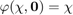 (without uncertainty, the estimated state equals the true state). The uncertainty lives in a vector space 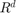 and one can use standard UKF tools on this variable. We then need a inverse retraction function to get a vector difference from two states, that must respect 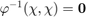.
, where the retraction function has only to satisfy 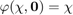 (without uncertainty, the estimated state equals the true state). The uncertainty lives in a vector space 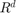 and one can use standard UKF tools on this variable. We then need a inverse retraction function to get a vector difference from two states, that must respect 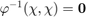.
We choose here to embed the state in 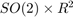, such that:
- the function is the exponential map for orientation and the standard vector addition for robot position.
- the function is the logarithm for orientation and the standard vector subtraction for position.
One can suggest alternative and more adapted retraction, e.g. by viewing the state as a element of 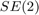. It generally exists several possibilities to define retraction. When no theoretical suggestions are in favour of a retraction, we suggest to just compare then. In the benchmarks folder, we compare different choices of retraction for different problems.
We know define UKF parameters, where we consider an innacurate initial heading estimation of 1°. We set the remaining parameters as in the simulation.
% propagation noise matrix ukf_Q = diag(odo_noise_std.^2); % measurement noise matrix ukf_R = gps_noise_std.^2 * eye(2); % initial error matrix ukf_P0 = zeros(3, 3); % The state is not perfectly initialized ukf_P0(1, 1) = (1/180*pi)^2; ukf_alpha = [1e-3, 1e-3, 1e-3]; % this parameter scales the sigma points. Current values are betwenn 10^-3 % and 1 % define the UKF propagation and measurement functions ukf_f = @localization_f; ukf_h = @localization_h; ukf_phi = @localization_phi; ukf_phi_inv = @localization_phi_inv; % get UKF weight parameters ukf_weights = ukf_set_weight(3, 2, ukf_alpha); % compute Cholewski decomposition of Q only once ukf_cholQ = chol(ukf_Q);
We initialize the filter with the true state plus a small initial error heading of 1°, and set corresponding initial covariance matrices.
ukf_state = states(1); % "add" orientation error to the initial state ukf_state.Rot = ukf_state.Rot * so2_exp(sqrt(ukf_P0(1, 1))); ukf_P = ukf_P0; % set variables for recording estimates along the full trajectory ukf_states = ukf_state; ukf_Ps = zeros(N, length(ukf_P), length(ukf_P)); ukf_Ps(1, :, :) = ukf_P; % measurement iteration number (first measurement is for n == 1) k = 2;
Filtering
The UKF proceeds as a standard Kalman filter with a simple for loop.
for n = 2:N % propagation [ukf_state, ukf_P] = ukf_propagation(ukf_state, ukf_P, omegas(n-1), ... ukf_f, dt, ukf_phi, ukf_phi_inv, ukf_cholQ, ukf_weights); % update only if a measurement is received if one_hot_ys(n) == 1 [ukf_state, ukf_P] = ukf_update(ukf_state, ukf_P, ys(:, k), ... ukf_h, ukf_phi, ukf_R, ukf_weights); k = k + 1; end % save estimates ukf_states(n) = ukf_state; ukf_Ps(n, :, :) = ukf_P; end
Results
We plot the trajectory, GPS measurements and estimated trajectory.
localization_results_plot(ukf_states, ukf_Ps, states, dt, ys)
 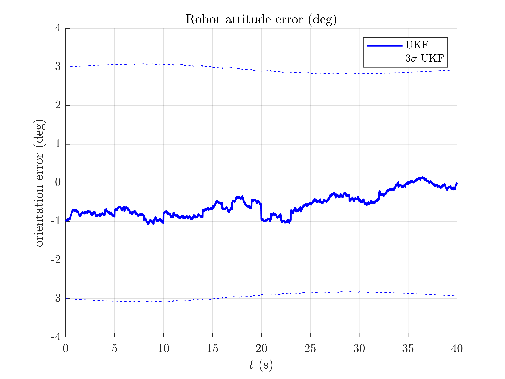 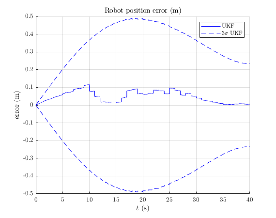
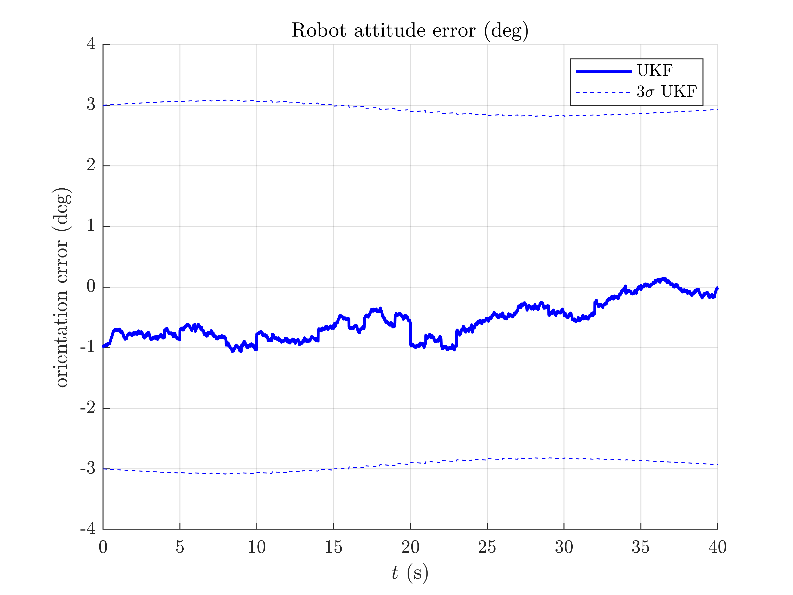 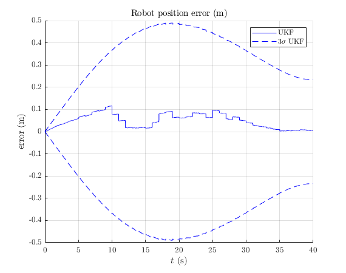 This script introduces UKF-M and shows how the UKF on parallelizable manifolds generalizes the standard UKF by considering an user-chosen uncertainty representation. Two major advantages are that many problems could be addressed with the proposed framework, and that both the theory and the implementation are not so complicated. Once the physical model is established, deriving an UKF is quite immediate.
The filter works apparently well on a simple robot localization problem, with small initial heading error. Is it hold for more challenging initial error ?
You can now:
- enter more in depth with the theory, see [BBB19].
- address the UKF for the same problem with different noise parameters, and even tested its robustness e.g. to strong initial heading error.
- modify the propagation model with a differential odometry model, where inputs are left and right wheel speed measurements.
- apply the UKF for the same problem on real data.
- benchmark the UKF with different function error and compare the new filters to both the extended Kalman filter and invariant extended Kalman filter of [BB17].